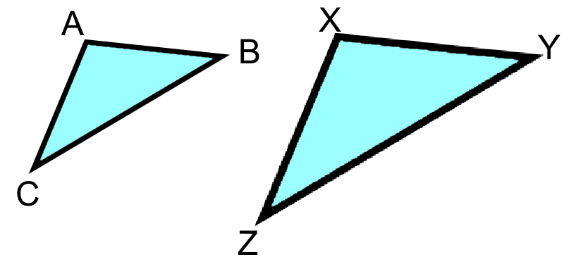
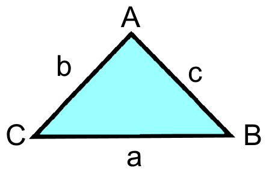
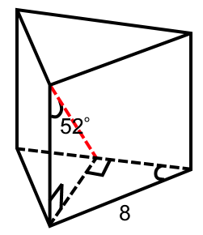
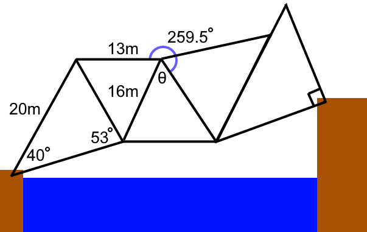
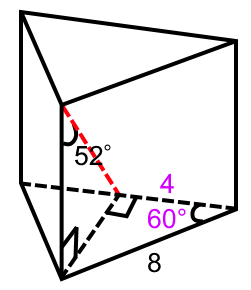

Math Caching
Chapter 7-8 Review
Jump to clue
Congruent - Congruent figures have the same shape and size.
Similar - Similar figures have the same shape but different sizes. Similar figures have
equal
corresponding
angles, and side ratios.
The scale factor, \(k\) relates the lengths of corresponding sides of similar figures.

In triangle \(\triangle ABC\) and \(\triangle XYZ\)
\(\frac{AB}{XY}=\frac{BC}{YZ}=\frac{CA}{XZ}=k\)
Using this relation, side lengths of similar triangles can be solved.
In a right triangle the ratios of the sides to angles can be expressed in the three primary trigonometric
ratios, tangent, sin, and cosine, they are as follows:
\(\tan\theta=\frac{\text{opposite}}{\text{adjacent}}, \sin\theta=\frac{\text{opposite}}{\text{hypotenuse}},
\cos\theta=\frac{\text{adjacent}}{\text{hypotenuse}}\)
These can be remembered as SOHCAHTOA, if given the right angle of a triangle, and two other pieces of
information, the values of all the other sides and angles can be found.
Sin law - The sine law states that in an acute triangle, the value of a side divided by the
sin
of its opposite
angle, or vice versa will be the same for all angle side pairs.

\(\frac{a}{\sin A}=\frac{b}{\sin B}=\frac{c}{\sin C}\) or \(\frac{\sin A}{a}=\frac{\sin B}{b}=\frac{\sin
C}{c}\)
Cosine law - The cosine law relates the cosine of an angle to the three side length of an
acute
triangle.
\(a^2=b^2+c^2-2bc(\cos A)\)
\(b^2=c^2+a^2-2bc(\cos B)\)
\(c^2=a^2+b^2-2bc(\cos C)\)
Using trigonometry problems involving right, and acute triangles can be solved. Most of the time multiple steps will be required, and there may be more than one process of getting to the solution.
Math Caching Clue
-
In the prism below, the triangle bases are equilateral, find the length of the red dashed line to the nearest hundredth. (4 marks)

-
Below is a bridge design for a new wind turbine park, the engineers want to find the value of angle theta, but only have the dimensions listed below. What is the value of theta rounded to the nearest integer? Do not include degree
sign. (6
marks)

1.
Since the bases of the prism are equilateral, we know that that the angle in between each sides must be 60°, we can identify the value of one of the sides as half of 8, as all sides are equal in an equilateral triangle.

The missing side can be found through either the sin or tangent ratio. We will use the sin ratio:
\begin{aligned}
\sin\theta&=\frac{\text{opposite}}{\text{hypotenuse}}\\
\sin(60)&=\frac{\text{opposite}}{8}\\
4\sqrt{3}&=\text{opposite}
\end{aligned}
(1 mark)
Now we use the sin ratio to find the red length:
\begin{aligned}
\sin\theta&=\frac{\text{opposite}}{\text{hypotenuse}}\\
\sin(52)&=\frac{4\sqrt{3}}{\text{hypotenuse}}\\
8.792...&=\text{hypotenuse}
\end{aligned}
(1 mark)
\(∴ \text{The length of the red line is 8.79}\) (2 marks)
2.
The value of \(x\) can be found with the sin law:
\begin{aligned}
\frac{20}{\sin{(53)}}&=\frac{x}{\sin{(40)}}\\
\frac{20}{\sin{(53)}}\cdot\sin{(40)}&=x\\
16.09714573&=x
\end{aligned}
(1 mark)
The value of \(y\) can be found through the cosine law, assign \(y\) to angle A to solve.
\begin{aligned}
a^2&=b^2+c^2-2bc(\cos A)\\
\cos^{-1}{\frac{a^2-b^2-c^2}{-2bc}}&=y\\
\cos^{-1}{\frac{16.09714573^2-13^2-16^2}{-2(13)(16)}}&=y\\
66.49965059&=y
\end{aligned}
(2 mark)
Add \(y\) to 259.5, subtract the total from 360 to get θ:
\begin{aligned}
θ&=360-(259.5+y)\\
θ&=360-(259.5+66.49965059)\\
θ&=34.00...
\end{aligned}
(1 mark)
\(∴ \text{The angle of θ is 34°}\) (2 marks)